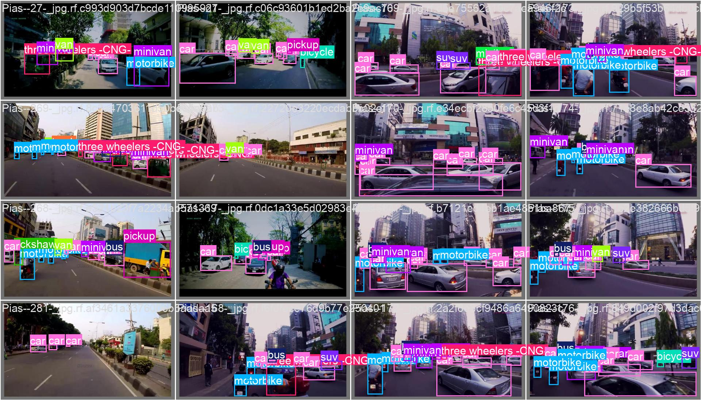

Proiectul propus are ca scop principal dezvoltarea unei soluții eficiente pentru identificarea vehiculelor din imagini.
Această soluție poate fi utilizată în diverse domenii, cum ar fi monitorizarea traficului, siguranța rutieră sau managementul parcărilor.
> Preprocesarea setului de date pentru a asigura o calitate ridicată a antrenării.
> Antrenarea unui model bazat pe rețele neuronale convoluționale (CNN) pentru detectarea vehiculelor.
> Testarea și validarea modelului pe un set de imagini necunoscute pentru a evalua performanța.
> Labels & Prediction
Labels
Etichetele reprezintă pozițiile și clasele corecte ale vehiculelor.
Prediction
Predicțiile sunt rezultatele generate de model, incluzând clasele detectate și nivelurile de încredere.
Suprapunerea lor indică performanța modelului.
Arhitectura sistemului se bazează pe modelul YOLO11n (You Only Look Once), recunoscut pentru acuratețea ridicată în detectarea obiectelor.
În acest proiect, procesarea se realizează pe imagini.
În urma antrenării în Google Colab a modelului nostru, am extras câteva lucruri importante pentru acest proiect:
În urma analizării rezultatelor obținute, putem concluziona că proiectul „Detecția vehiculelor din imagini folosind YOLO” reușește să abordeze problemele propuse, însă nivelul de performanță nu este unul optim, ceea ce indică necesitatea unor îmbunătățiri.
Pentru a crește performanța modelului de detectare a obiectelor, se pot implementa următoarele optimizări:
Extinderea și diversificarea setului de date: Utilizarea unui set de imagini mai mare și mai variat ar ajuta modelul să învețe mai bine și să recunoască obiectele în mai multe situații diferite din viața reală.
Creșterea numărului de epoci: Antrenarea modelului pentru mai multe epoci ar putea ajuta modelul să înțeleagă mai bine imaginile și să obțină rezultate mai bune.
Includerea unor parametri de antrenare pentru a îmbunătăți performanța:
- Am învățat cât de importantă este preprocesarea datelor și ajustarea parametrilor pentru performanța unui model.
- De asemenea, am realizat cât de important este să testăm bine modelul pe diferite situații pentru a-l face mai bun și util.